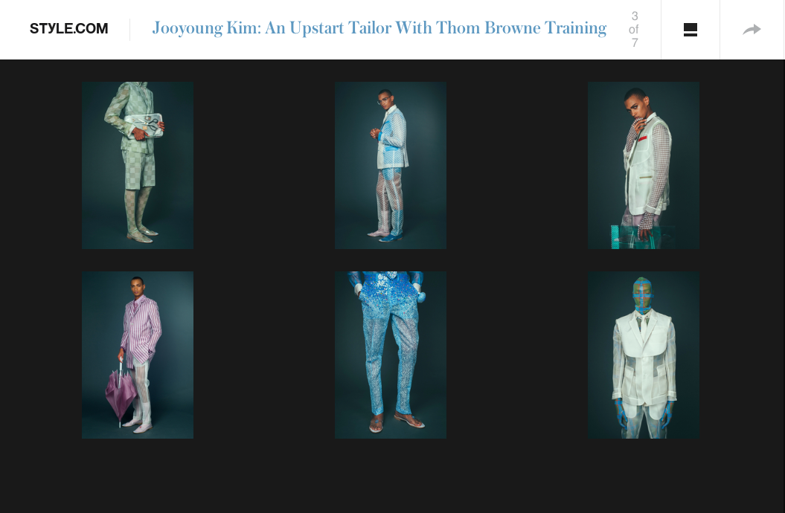

My collection, “Translucent Beauty,” is about the inner beauty of menswear that is found in all the layers and hidden elements of a tailored garment. In “Translucent Beauty,” transparency is both a visual and conceptual theme. Through translucent fabrics, I wished to show clearly the technical and fundamental details found in menswear design. Combining organza with screen-printing, I screen-printed five fundamental men’s suit patterns such as houndstooth, herringbone, tweed, glen plaid, and pin stripes in different scales. Screen-printing these patterns is unique because white color cannot be printed from a digital print machine. This technique demonstrates that the originality of the handmade craft isn’t lost to the digitalization of society. As I began to form relationships with button makers and trim fabricators to create this collection, I began to respect even more the practice of craft and saw the value of raising awareness of and supporting a sustainable and transparent business of production.Furthermore, I wanted to express my fashion style, not just a trend, and how fashion is tied to my identity. My identity is the fundamental access of menswear and all the details and pieces that make a piece. Through “Translucent Beauty,” I wanted to celebrate traditional tailoring and craftsmanship by enhancing the traditional through not manipulations, but different fabrications. www.jooyoung.kim.
